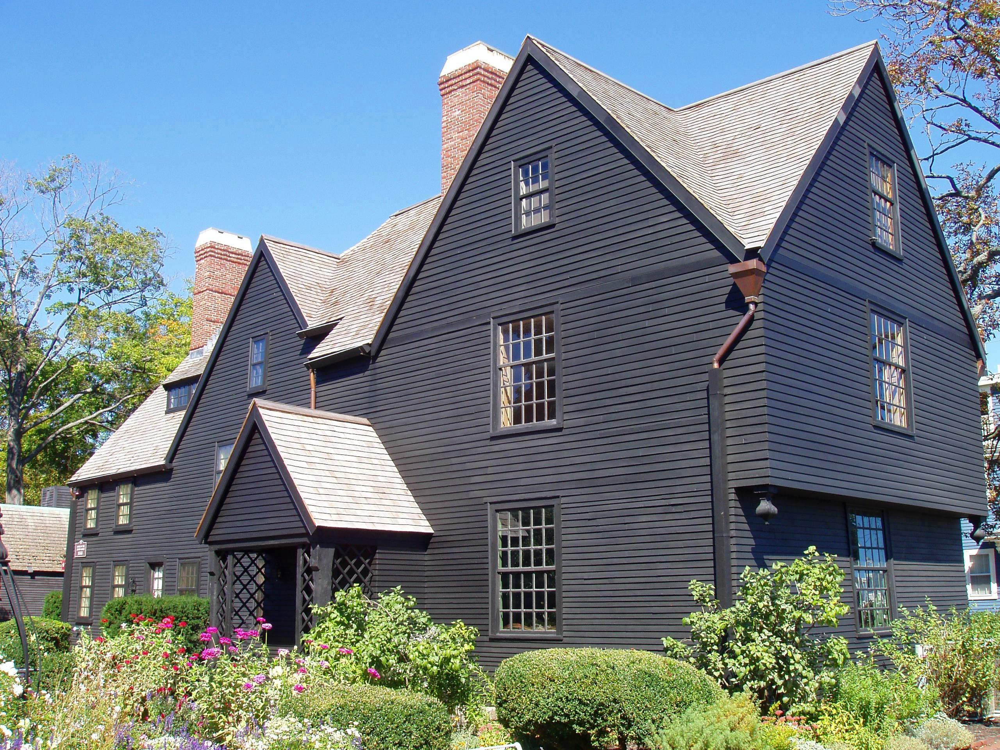

The History of House of the Seven Gables
Standing along Salem Harbor in Massachusetts, the House of the Seven Gables is one of New England's most recognizable historic homes. Built in 1668 for wealthy sea captain John Turner, the mansion witnessed centuries of changing architectural styles, family fortunes, and American history. It became internationally famous after inspiring Nathaniel Hawthorne's 1851 Gothic novel, The House of the Seven Gables. Its distinctive rooflines, dark wooden exterior, and connection to Salem's mysterious past have made it a celebrated historic landmark. Today, the restored mansion operates as a museum preserving its architectural and literary legacy.

Origins and Architecture
Constructed in 1668, the house is an exceptional example of seventeenth-century New England architecture. Its original structure featured a central chimney surrounded by four rooms, following traditional English post-medieval building practices. As the Turner family's wealth increased, the mansion expanded with additional wings, elaborate woodwork, and decorative improvements. Later owners modified its appearance to reflect changing architectural fashions, even removing several of its famous gables. During an early twentieth-century restoration, the house regained much of its seventeenth-century appearance. Its steeply pitched roofs, timber framing, and centuries of renovations make it a remarkable architectural survivor.
People and Changing History
The house was originally owned by John Turner, a successful Salem merchant and sea captain whose family occupied the mansion for three generations. In 1782, it was purchased by Captain Samuel Ingersoll and eventually passed to his daughter, Susanna Ingersoll. Susanna frequently welcomed her cousin, author Nathaniel Hawthorne, whose visits helped inspire his famous novel. During the late nineteenth century, the Upton family operated the property as a residence and early tourist attraction. In 1908, philanthropist Caroline Emmerton purchased the building, transforming it into a historic museum while supporting educational and social programs for Salem's immigrant community.
Notable Events
Construction of the mansion began in 1668, and subsequent expansions transformed it into one of Salem's most impressive colonial residences. Its purchase by Samuel Ingersoll in 1782 marked the beginning of another chapter in its history. In 1851, Nathaniel Hawthorne published The House of the Seven Gables, giving the building an enduring literary identity. Caroline Emmerton acquired the property in 1908 and oversaw a major restoration with architect Joseph Everett Chandler. The mansion opened as a museum in April 1910, with proceeds supporting settlement programs for immigrant families. In 2007, the surrounding historic district received National Historic Landmark designation.
Legends and Mysteries
The House of the Seven Gables has become closely associated with Gothic literature, family curses, and Salem's mysterious reputation. Nathaniel Hawthorne's novel tells the fictional story of the Pyncheon family, whose prosperity is overshadowed by an ancient curse connected to accusations of witchcraft. Hawthorne drew inspiration from Salem's history and his own family connections to the witch trials. Although the house was standing during the trials of 1692, it was not itself a central location of those events. Stories of hauntings and hidden secrets have added to its mysterious atmosphere, but the novel's supernatural elements belong to fiction rather than verified history.
Evidence and Unanswered Questions
Historical records establish the mansion's construction, ownership, architectural changes, and connection to Nathaniel Hawthorne. Surviving structural features and preservation studies reveal how the house evolved through different generations. However, its present appearance is partly the result of restoration decisions made in the early twentieth century. Some features were reconstructed to evoke the colonial period and the atmosphere of Hawthorne's novel. This creates an interesting question about the relationship between historical preservation and artistic interpretation. While the house's connection to literature is well documented, stories of curses and supernatural activity remain part of its cultural legend.
Sources and References
The historical information presented on this page was compiled from the House of the Seven Gables museum, the Library of Congress, the Salem Witch Museum, and architectural history resources. These materials document the mansion's construction, former residents, preservation, and literary significance. Accounts of curses and supernatural events are distinguished from established historical facts.
References
The House of the Seven Gables — Historic Structures https://7gables.org/historic-structures/
The House of the Seven Gables — Organization History https://7gables.org/organization-history/
Library of Congress — House of the Seven Gables https://www.loc.gov/item/ma0164/
Salem Witch Museum — The House of the Seven Gables https://salemwitchmuseum.com/locations/the-house-of-the-seven-gables-turner-ingersoll-mansion/
Society of Architectural Historians — Captain John Turner House https://sah-archipedia.org/buildings/MA-02-009-0036